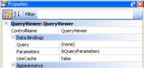

Query ObjectWhen executing a commit the following possible messages are detailed: # Case 1 error: GeneXus Server: Part descriptor not found: 'Query Version 3' (provided by package 'Artech.GXplorer.BL'). ... error: GeneXus Server: Could not commit changes # Case 2 error: GeneXus Server: Error reading from export file. error: GeneXus Server: Unknown query version (4) error: GeneXus Server: An error occurred in Query 'QueryObjectName' : Error reading from export file. The GeneXus Server instance and IDE are not compatible, you need to update both to version 17 Upgrade #1 or higher, more information. When executing an Update operation; the following message is detailed: Updating Web Panel 'SampleWebPanel'... Failed error: Error reading from export file. error: 'sdt:QueryViewerAxes.Axis' invalid value for property 'ATTCUSTOMTYPE' : Cannot convert value 'sdt:QueryViewerAxes.Axis'. (Variables, Axis) error: An error occurred in WebPanel 'ViewQuery' : Error reading from export file. 'sdt:QueryViewerAxes.Axis' invalid value for property 'ATTCUSTOMTYPE' : Cannot convert value 'sdt:QueryViewerAxes.Axis'. (Variables, Axis) The GeneXus Server instance and IDE are not compatible, you need to update both to version 17 Upgrade #1 or higher, more information. When opening a Knowledge Base with GeneXus 16 upgrade 10 or lower, which has Query object saved with GeneXus 16 Upgrade 11 or higher, the following message is detailed:
Knowledge Base at 'PathToKB' contains items that GeneXus doesn't know how to handle and will therefore be inaccessible.
It is likely that the Knowledge Base has been previously opened with a GeneXus installation which had extensions that are not present in the current one.
These items are:
* 'QueryVersion3' - 'Query Version 3' (GUID 025b1afc-982f-4bdb-8fa0-4c1712cb94fc)
Provided by 'Artech.GXplorer.BL' (GUID 6818d053-bcb6-46c3-beb9-41a2bd901d88).
Working on this Knowledge Base may lose information related to these unknown items.
Do you want to continue?
Upgrade the GeneXus version to GeneXus 16 Upgrade 11 or higher. Query Viewer ControlThe Web Panel does not show the associated queryThe Query Viewer control has assigned a Query in it's property definition. Make sure you have set it in design time  or runtime: QueryViewer.QueryName = &QueryName // must match a Query Object Name. Error: null when executing a query in runtimeCheck the DBMS properties to make sure the connection with the database is set OK. The Query viewer control is not shownTo view the Query Viewer content, JavaScript must be enabled in your browser, and you need the latest version of the Adobe Flash Player. Download the free player from here, otherwise you could get the following error: Error: This content requires the Adobe Flash Player (version 9.0.28). [http://www.adobe.com/products/flashplayer/|Get Flash] The Query object does not existWhen assigning a Query Object in runtime you could get the following error: Error: The Query with name = myQueryObjectName does not exist In this case the Query Object no longer exists in the related knowledge base; make sure you set it's name correctly. The Query object does not executesIf you are upgrading GeneXus, check the compatibility section. |
| Backlinks | |
| GeneXus 17 upgrade 1 | Toc:Reporting in GeneXus |